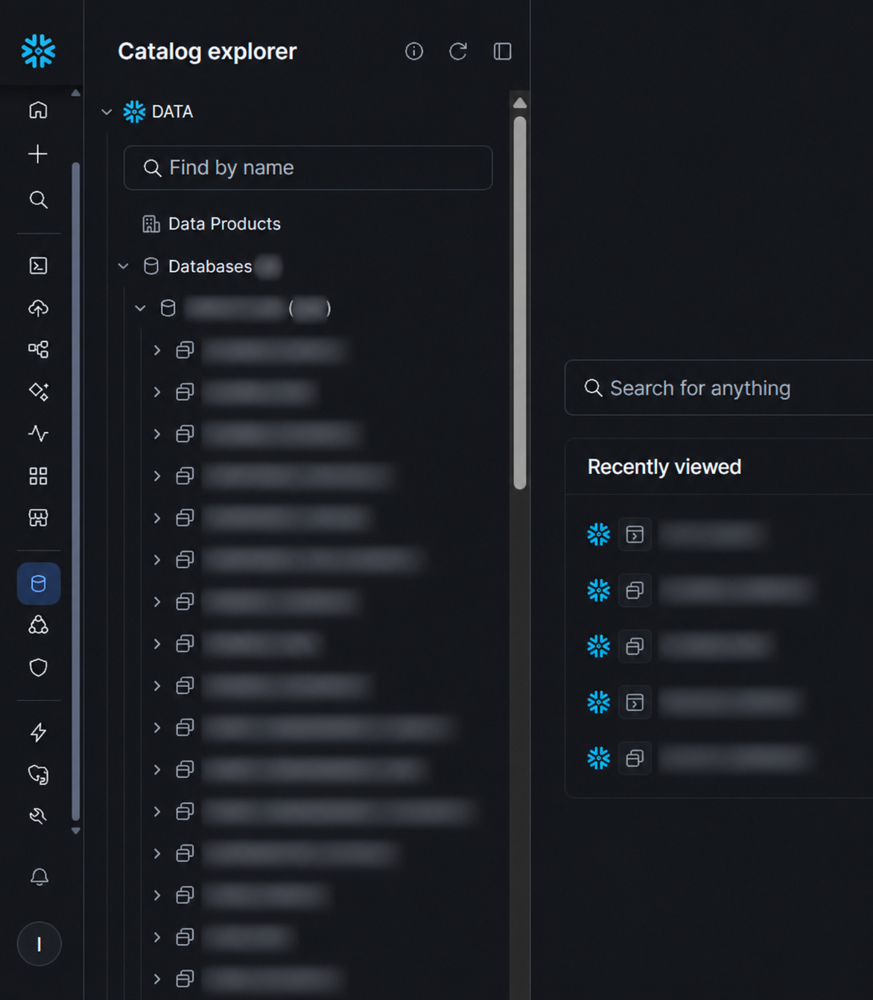
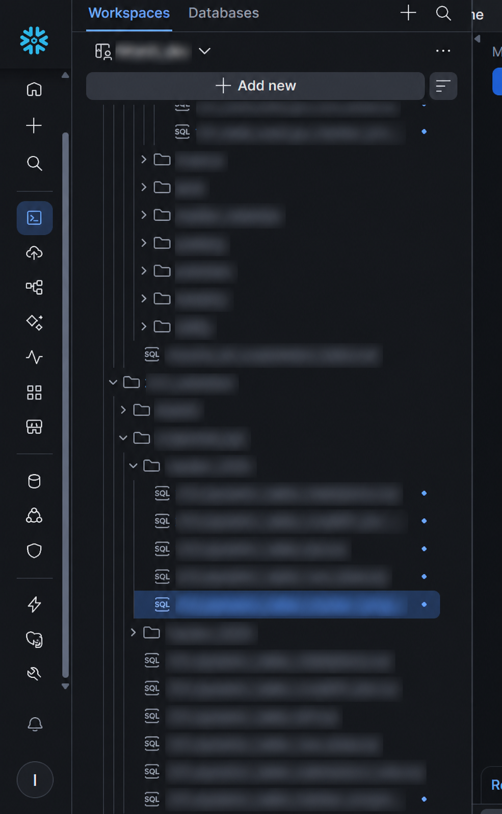

Organize the data layers
I worked with raw, validated, and curated layers in Snowflake, separating the stages of data preparation.
Case study / Data engineering
From layered data preparation in Snowflake to a final connection with Power BI for reporting.
01 / The purpose
This project organizes data in Snowflake through raw, validated, and curated layers. SQL workflows support the preparation of datasets for analytics, with Power BI connected at the reporting end.
The screenshots show the Snowflake catalog and development workspace. Internal database, schema, object, workspace, and SQL file names are obscured for portfolio presentation.
Layered data organization and SQL transformation workflows in Snowflake.
A final connection from Snowflake to Power BI.
02 / My approach
I worked with raw, validated, and curated layers in Snowflake, separating the stages of data preparation.
I organized SQL development within the Snowflake workspace to support the transformation of data between preparation stages.
The workflow ends with a connection to Power BI, bringing the prepared data into the reporting environment.
03 / Snowflake workspace
Redacted views of the catalog and SQL development workspace. Select a screenshot to open it in a new tab.

The catalog view illustrates how the data environment is organized. Internal names are obscured.

Nested folders and SQL files show the development structure. Workspace and file names are obscured.
The screenshots document the Snowflake environment. The Power BI connection is described from my project work; connection settings, credentials, and internal queries are not displayed.
04 / Project components
Raw, validated, and curated data organization in Snowflake.
Transformation work organized within the development workspace.
A reporting endpoint connected to the prepared Snowflake data.
See my dashboard projects and other work in the main portfolio.